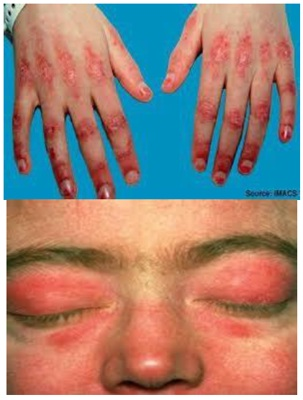
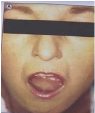
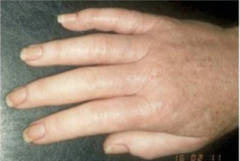

Questão 1 · Gastrointestinal · 4000184836Mulher, 45 anos, procura clínico para investigação de causa secundária para fenômeno de queixas relatadas na anamnese dirigida são realizados alguns exames investigativos. Pode-se a rmar que, dentre os achados relacionados ao estudo do trato gastrintestinal, aquele que corrobora a possibilidade de esclerose sistêmica é:
A anemia secundária a gastropatia hipertensiva portal na endoscopia.
B aperistalse e hipotensão do esfíncter inferior na manometria esofágica.
C fístulas em jejuno na enterografia por tomografia computadorizada.
D angiodisplasia de ceco na colonoscopia.
Questão 2 · Esclerose sistêmica · Reumatologia · 4000183190Mulher, 54 anos de idade, refere episódios de alteração de coloração das mãos e pés, caracterizada por palidez, cianose e eritema, episódicas, geralmente desencadeadas pelo frio, há 6 meses. Há 2 anos apresenta queimação retroesternal pós alimentares, com pouca melhora após uso de inibidor de bomba de próton. Nega outras queixas. Qual é o diagnóstico mais provável?
A Miopatia inflamatória idiopática.
B Esclerose sistêmica.
C Artrite reumatoide.
D Lúpus eritematoso sistêmico.
Questão 3 · Esclerose sistêmica · Reumatologia · Fenômeno de Raynaud · 4000182172Mulher, 52 anos, há três anos apresenta arroxeamento, formigamento e queimação em dedos das mãos ao contato com superfícies ou ambientes frios. Refere disfagia para alimentos sólido, com frequente queimação retroesternal pós alimentar. Exame físico: bom estado geral; redução da elasticidade da pele em dorso das mãos; murmúrio vesicular bem distribuído, com estertores em velcro nas bases pulmonares. Teste de contato com gelo resultou na imagem abaixo: Qual medicação está indicada para a alteração mostrada na imagem?

A Metotrexato.
B Nifedipino.
C Varfarina.
D Prednisona.
Questão 4 · Esclerose sistêmica · Reumatologia · 4000182170Mulher, 41 anos, refere dispneia progressiva há 1 ano, atualmente ao andar 50 metros. Há 8 meses notou edema de membros inferiores. Refere que as mãos cam arroxeadas e em seguida esbranquiçadas, quando em contato com água gelada, e diz ter disfagia com engasgos há 3 anos. Exame físico: BEG, corada, hidratada, elasticidade da pele reduzida em membros e face. com diminuição da abertura oral. Murmúrio vesicular presente, simétrico, sem ruídos adventícios FR: 26 ipm. Sat 02: 87% em ar ambiente. Ritmo cardíaco regular com hiperfonese de B2. FC: 98 bpm. PA: 110 x 60 mmHg. Estase jugular a 45 graus. Qual sintoma adicional seria mais compatível?
A Síncope.
B Ortopneia.
C Hemoptise.
D Chiado.
Questão 5 · Polimiosite · 4000167638O acometimento pleuropulmonar em pacientes com doenças autoimunes sistêmicas é comum e pode levar ao aumento da morbidade e mortalidade. O diagnóstico precoce dessas manifestações oferece a melhor chance de intervir e melhorar o prognóstico. A respeito desse assunto, julgue o item. Em casos de polimiosite, a manifestação mais comum é a pneumonia aspirativa.
A Certo.
B Errado.
Questão 6 · Esclerose sistêmica · 4000167637O acometimento pleuropulmonar em pacientes com doenças autoimunes sistêmicas é comum e pode levar ao aumento da morbidade e mortalidade. O diagnóstico precoce dessas manifestações oferece a melhor chance de intervir e melhorar o prognóstico. A respeito desse assunto, julgue o item. A esclerose sistêmica, principalmente na forma difusa, é a doença reumática com maior acometimento por doença pulmonar intersticial.
A Certo.
B Errado.
Questão 7 · Exames complementares · Quadro clínico · Dermatomiosite · 4000167118Uma mulher de 40 anos, branca, refere que, há 3 meses, apareceram manchas avermelhadas nas pálpebras e no dorso das mãos que apresentavam melhora discreta com o uso tópico de corticoide. Nos últimos 20 dias, começou a apresentar di culdade de elevar os braços para pentear os cabelos e escovar os dentes. Também notou que não conseguia subir os dois lances de escada de sua casa e passou a precisar de ajuda para levantar da cama e de cadeiras. Qual achado de exame físico pode definir o diagnóstico?
A Eritrodermia.
B Prurido generalizado.
C Pápulas de Gottron.
D Nódulos de Bouchard.
E Nódulos de Heberden.
Questão 8 · Dermatomiosite · 4000166864Mulher de 43 anos, queixando-se de di culdade em pentear os cabelos, subir escadas e disfagia. Clinicamente, apresentava eritema róseo-violáceo nas pálpebras, região malar, fronte e têmporas com edema periorbitário. Nas mãos, apresentava placas eritematosas sobre as articulações interfalangeanas e máculas eritemato-violáceas na região do V do decote. Os exames laboratoriais demonstravam aumento dos níveis séricos de creatinofosfocina-se, aldolase, transaminases (ALT, AST) e desidrogenase láctica. Nesse caso, o diagnóstico da paciente é:
A esclerose sistêmica.
B dermatomiosite.
C lúpus eritematoso discoide.
D lúpus eritematoso subagudo.
Questão 9 · Esclerose sistêmica · 4000165134Sobre a esclerose sistêmica com envolvimento cutâneo difuso, assinale a alternativa correta. I - O envolvimento pulmonar ainda que grave, é raro, e se caracteriza por hipertensão arterial pulmonar. II - A crise renal esclerodérmica é muito comum, com alta taxa de letalidade. III - As alterações gastrintestinais envolvem somente o trato superior especialmente o esôfago.
A As afirmativas I e II são verdadeiras. A afirmativa III é falsa.
B As afirmativas I e III são verdadeiras. A afirmativa II é falsa.
C As afirmativas II e III são verdadeiras. A afirmativa I é falsa.
D As afirmativas I, II e III são verdadeiras.
E As afirmativas I, II e III são falsas.
Questão 10 · Fenômeno de Raynaud · 4000163443Qual das doenças reumatológicas abaixo apresenta a maior associação com o fenômeno de Raynaud?
A Artrite reumatoide.
B Dermatomiosite.
C Esclerose sistêmica.
D Dermatomiosite.
E Síndrome de Sjögren.
Questão 11 · Síndrome de Sjögren · 4000151773Com frequência, a pele pode estar comprometida em diversas doenças sistêmicas. Assinale a opção que apresenta a correlação correta entre a manifestação cutânea e a provável doença associada.
A Sinal definikolsky positivo – Psoríase artropática
B Lesões em áreas fotoexpostas discoides – Artrite reumatoide
C Mixedema e alopecia do 1/3 lateral das sobrancelhas – Hipertireoidismo
D Pápulas de Gotton e eritema heliotropo – Doença de Behçet
E Queratoconjuntivite seca e xerostomia – Síndrome de Sjögren
Questão 12 · Polimiosite · 4000151652Homem de 50 anos relata fraqueza e fadiga nos últimos 3 meses. Refere di culdade crescente para realizar com certas tarefas, como pentear o cabelo, levantar de uma cadeira ou subir escadas. Ele negava problemas para falar ou engolir. Ao exame apresenta força muscular 4 em 5 na extensão do pescoço e músculos proximais dos braços e pernas bilateralmente. Sensibilidade e reflexos não mostraram nenhuma alteração. Qual o diagnóstico?
A Polimiosite
B Miastenia Gravis
C Doença do neurônio motor
D Síndromes de Guillain-Barré
Questão 13 · Esclerose sistêmica · 4000146625Paciente com esclerose sistêmica difusa, dá entrada no hospital com crise renal esclerodérmica. Nesse caso:
A Deve-se entrar com uso de captopril, em uma dose mínima de 300 mg/dia, para manter os níveis de creatinina sérica > 3 mg/dL.
B Deve-se iniciar a diálise imediatamente, para se obter rápido controle da PA e tentar manter os níveis de creatinina sérica < 3 mg/dL.
C Deve-se entrar com uso de captopril, em uma dose que pode chegar a 300 mg/dia, para se obter rápido controle da PA e tentar manter os níveis de creatinina sérica < 3 mg/dL.
D Deve-se iniciar a diálise imediatamente, para se obter rápido controle da PA e tentar manter os níveis de creatinina sérica > 3 mg/dL.
Questão 14 · Síndrome de Sjögren · 4000146178Com relação às colagenoses, assinale a alternativa CORRETA:
A É importante monitorizar contagem de linfócitos, recorrência de edema de parótidas, linfadenomegalias e perfil da eletroforese de proteínas séricas e urinárias nos pacientes com síndrome de Sjögren primária, pois a mudança no seu perfil pode sugerir possibilidade de evolução para linfoma.
B Muito mais importante que saber o padrão do Fator Antinuclear (FAN), é saber a sua titulação, pois o padrão do FAN de nada importa se este estiver em títulos baixos.
C O fenômeno de Raynaud é um desarranjo do sistema nervoso autônomo, no controle dos calibres dos vasos sanguíneos, que ocorre exclusivamente em extremidades do corpo, como mãos ou pés.
D Pacientes que irão receber prednisona em dose ≥ 7,5 mg por mais de 3 meses e menos de 1 ano não precisam ser submetidos a profilaxia para osteoporose, pois o risco de osteoporose nos usuários de corticoide ocorre principalmente após 1 ano de uso.
Questão 15 · Síndrome de Sjögren · 4000144330Paciente do sexo feminino, 23 anos, refere aumento de volume de região parotidea com associação à xerostomia, xeroftalmia e hiperemia conjuntiva!. Refere ainda dor articular de padrão inflamatório e dor difusa com pontos gatilho. Nega sintomas genitourinários. Em relação às hipóteses diagnósticas, assinale a alternativa correta.
A Doença de Beçet.
B Doença de Wegener.
C Lúpus eritematoso sistêmico.
D Síndrome de Sjogren.
Questão 16 · Fenômeno de Raynaud · 4000143414O fenômeno Raynaud é uma resposta vascular exagerada à temperatura fria ou ao estresse emocional. O fenômeno se manifesta clinicamente por alterações de cor acentuadamente demarcadas da pele dos dígitos. Todas as seguintes drogas podem precipitar ou exacerbar o fenômeno de Raynaud,
A Amlodipina
B Ergotamina
C Cisplatina
D Bleomicina
E Interferon
Questão 17 · Dermatomiosite · 4000140549Mulher de 50 anos de idade procura o ambulatório de clínica médica com queixa de fraqueza muscular proximal de membros superiores e inferiores iniciada há 2 meses, com poliartrite simétrica de pequenas articulações e lesões de pele ilustradas na figura a seguir. Sobre a principal hipótese diagnóstica, assinale a alternativa correta:

A A doença caracteriza-se por fraqueza muscular, todavia, mialgia é sintoma raro.
B A maioria dos pacientes apresenta lesões cutâneas sem comprometimento muscular.
C Sugere-se rastreamento para neoplasias, sendo maior o risco nos primeiros anos após diagnóstico da doença.
D Acometimento pulmonar deve fazer pensar em sobreposição com outras doenças, como Esclerose Sistêmica.
Questão 18 · Dermatomiosite · 4000134634Qual o anticorpo mais provavelmente associado à forma amiopática da dermatomiosite?
A Anti-TIF-1.
B Anti-MDA-5.
C Anti-Ku.
D Anti-Mi-2.
E Anti-Scl70.
Questão 19 · Síndrome antissintetase · 4000133181Mulher de 72 anos, comparece à consulta médica com o seguinte relato: há cerca de 2 meses, com quadro de dispneia, incialmente em grau II (mmRc), atualmente em grau IV (mmrC) com profunda limitação às atividades do cotidiano. Refere incapacidade para pentear cabelo e uso de apoio para levantar-se de cadeiras, além de mudança de cor em pontas digitais de acordo com a temperatura do ambiente.Ao exame físico nota-se: pápulas eritematosas em superfícies dorsais das articulações metacarpofalangeanas e interfalangeanas simétricas. Mãos com aspecto hiperceratótico, com ssuras na região palmar e superfície lateral dos dedos. Joelhos com hiperemia local e aumento do volume, com limitação a extensão e exão. Ausculta respiratória com presença de crepitações meso-teleinspiratórias em terços médio e inferior bilateralmente, com saturimetria em ar ambiente: 87%, Frequência respiratória: 28irpm, Pressão arterial: 130/80mmhg, Frequência cardíaca: 90bpm; A paciente encontrava-se com exames laboratoriais recentes previamente realizados, com os seguintes resultados: Creatinofosfoquinase: 3000 Ui/L (VR: até 500 UI/L), HB:10,0 g/dL, Ht: 30% Leucograma: 8000 cels/mm3 ( 80% neutró los, 15% linfócitos, 3% eosinó los, 2% macrófagos) plaquetas: 100.000 uréia: 60mg/dl creatinina: 1,4mg/dL FAN: 1/640 (padrão citoplasmático pontilhado no), VHS: 80 mm. Tomogra a de tórax: múltiplas consolidações bilaterais e áreas em vidro fosco esparsas. Diante do contexto clínico acima, qual exame complementar poderia contribuir para o diagnóstico definitivo da condição?
A Ecocardiograma transtorácico.
B Eletroneuromiografia de membros superiores e inferiores.
C Espirometria pré e pós broncodilatador.
D Radiografia de mãos e punhos.
Questão 20 · Tratamento · Renal · Esclerose sistêmica · 4000128411Paciente, portadora de esclerodermia sistêmica, em uso de ciclofosfamida mensal, procura serviço médico com quadro de cefaleia, escotomas visuais e elevação da pressão arterial para 160x110 mmHg. Um hemograma revelou Hb = 9,6g/dL, leucócitos = 6.700 cél/mm³, plaquetas = 65.000/mm³ com hematoscopia revelando esquizócitos circulantes. Apresentava elevação da ureia e da creatinina. Frente ao quadro, qual dos medicamentos abaixo está mais indicado para a resolução do problema agudo?
A Furosemida
B Captopril
C Nifedipina
D Hidralazina
E Propranolol
Questão 21 · Laboratório · Esclerose sistêmica · Diagnóstico e classif icação · 4000108315Mulher, 36 anos de idade, previamente hígida, queixa-se de disfagia há 6 meses com piora progressiva, com perda ponderal de 3kg e pele seca no período. Nega história familiar semelhante. Ao exame clínico, apresenta achado clínico registrado na foto reproduzida a seguir: Após analisar bem a foto, assinale a principal hipótese diagnóstica para o caso e o exame laboratorial mais especifico para confirmação da hipótese:

A Artrite reumatoide, anticorpo antipeptídeo citrulinado (CCP).
B Lúpus eritematoso sistêmico; anti-DNA dupla hélice.
C Esclerose sistêmica difusa; anticorpo antitopoisomerase 1.
D Cirrose biliar primária, anticorpo antimitocôndria.
Questão 22 · Tratamento · Renal · Esclerose sistêmica · 4000095407Qual o tratamento de escolha para crise renal esclerodérmica?
A Corticoide.
B Bloqueador de canal de cálcio.
C Plasmaferese.
D Inibidor da enzima conversora.
Questão 23 · Esclerose sistêmica · Quadro clínico · Pele · 4000077457A microstomia é um sinal presente em que colagenose?
A Lúpus eritematoso sistêmico.
B Síndrome de Sjögren.
C Dermatomiosite.
D Artrite reumatoide.
E Esclerose sistêmica.
Questão 24 · Fenômeno de Raynaud · 4000072873No fenômeno de Raynaud secundário (síndrome de Raynaud) a doença do tecido conjuntivo mais frequente é:
A Síndrome de Sjögren.
B Lúpus eritematoso sistêmico.
C Doença mista do colágeno.
D Artrite reumatoide.
E Esclerodermia sistêmica.
Questão 25 · Quadro clínico · Dermatomiosite · 4000063635O sinal ou pápulas de Gottron e poiquilodermia são sinais cutâneos de
A cirrose hepática.
B lúpus eritematoso sistêmico.
C tuberculose.
D HIV.
E dermatomiosite.
Questão 26 · Diagnóstico e exames complementares · Manif estações clínicas · Síndrome de Sjögren · 4000062696O exame da córnea e da conjuntiva na lâmpada de fenda, após coloração com rosa bengala, revela ulcerações corneanas puntiformes e lamentos ligados ao epitélio da córnea. Associado a este exame, a mensuração lacrimal pelo teste de Schirmer I, e da composição lacrimal avaliada pelo tempo de quebra da lágrima ou conteúdo de lisozima da lágrima, são fundamentais para o diagnóstico guiado da seguinte enfermidade:
A Síndrome de Marfan
B Doença de Behçet
C Sarcoidose
D Síndrome de Sjögren
Questão 27 · Doenças autoimunes do tecido conjuntivo · 4000053740Marque a associação correta em relação a lesões de pele caracteristicamente encontradas nas doenças auto imunes.
A Heliotrópo/ esclerose sistêmica.
B Sinal de Gottron/ dermatomiosite.
C Balanite circinada/ espondilite anquilosante.
D Ceratodermia blenorrágica/ doença de Behçet.
E Calcinose cutânea disseminada/ lúpus eritematoso sistêmico.
Questão 28 · Laboratório · Esclerose sistêmica · 4000046528Uma paciente de 40 anos vinha observando há alguns anos que a ponta dos dedos cava arroxeada ao lavar as mãos em água fria. Nos últimos meses, passou a referir intensa fadiga, edema e dor nas mãos e enrijecimento da pele das mãos e antebraços, além de limitação na abertura da boca. Foi examinada pelo médico que solicitou alguns exames. Assinale a alternativa CORRETA com relação à interpretação desses exames.
A Se o FAN vier positivo, deve-se pensar em associação com Lúpus eritematoso sistêmico.
B Os anticorpos antitopoisomerase e anticentrômero têm sensibilidade elevada, mas são pouco específicos para o diagnóstico de esclerodermia, pois comumente são encontrados em pacientes com fenômeno de Raynaud isolado.
C O anticorpo anticentrômero é detectado em mais de 80% dos casos da forma difusa da esclerodermia.
D O anticorpo antitopoisomerase I (anti-Sel 70) é preditor de mau prognóstico, sendo marcador de risco para o desenvolvimento de doença intersticial pulmonar.
E É comum a positividade para fator reumatoide e anti-CCP em pacientes com a forma difusa da esclerodermia.
Questão 29 · Quadro clínico · Dermatomiosite · 4000039394A alternativa que NÃO corresponde aos sinais ou sintomas presentes na Dermatopolimiosite é
A Heliotropo
B Rash malar
C Fraqueza muscular assimétrica e distal
D Pápulas Gottron
Questão 30 · Laboratório · Esclerose sistêmica · 4000030023Assim como em outras doenças reumáticas autoimunes, a presença de autoanticorpos na esclerose sistêmica auxilia na caracterização das formas clínicas e no prognóstico da doença. Nesse contexto,
A o padrão de imunofluorescência mais comum do FAN é o citoplasmático.
B o anticorpo anticentrômero, na forma cutânea limitada, relaciona-se com o risco de hipertensão pulmonar.
C a presença de anticorpo antitopoisomerase I está associada a doença sistêmica grave e crise renal.
D o anticorpo anti-RNA polimerase III, na forma cutânea difusa, relaciona-se com o risco de doença intersticial.
Questão 31 · Laboratório · Esclerose sistêmica · Quadro clínico · 4000028716Em relação à esclerodermia, marque a alternativa INCORRETA:
A A crise renal esclerodérmica ocorre em 10 a 15% dos pacientes. Sua patogênese envolve vasculopatia obliterante e estreitamento do lume das artérias arqueadas e interlobulares renais. O seu tratamento consiste em evitar medicações nefrotóxicas e o uso de inibidores da enzima conversora de angiotensina.
B Autoanticorpos antinucleares estão presentes em quase todos os pacientes e podem ser detectados no início da doença. Autoanticorpos contra topoisomerase I (SCI-70 e centrômetro são muito específicos para a esclerose sistêmica.
C A doença pulmonar intersticial pode ser encontrada em até 90% dos pacientes na necropsia e em 85% pela tomografia computadorizada. Os fatores de risco para esse acometimento incluem: sexo feminino, indivíduos brancos e pequeno comprometimento da pele.
D O fenômeno de Raynaud é a complicação extracutânea mais frequente e se caracteriza por episódios de vasoconstrição reversível nos dedos das mãos e dos pés.
Questão 32 · Tratamento · Doença mista do tecido conjuntivo DMTC e síndromes de superposição · 4000027125Exames complementares Sobre a doença mista do tecido conjuntivo afirma-se que:
A a sua prevalência seja maior do que lúpus e esclerose sistêmica, acometendo preferencialmente mulheres.
B a presença de anticorpos anti-RNP e anti-dsDNA são obrigatórios para a confirmação diagnóstica.
C não há tratamento padrão, sendo adaptável conforme as manifestações clínicas mais prevalentes.
D inicialmente descrita como doença grave, hoje é doença de curso indolente e prognóstico melhor.
Questão 33 · Glicocorticoides · Medicamentos utilizados no tratamento da doenças reumáticas · 4000024424Em geral, não se esperam resultados favoráveis com a administração de glicocorticoides em pacientes acometidos por:
A arterite de células gigantes (arterite temporal)
B dermatopolimiosite
C esclerodermia (esclerose sistêmica)
D polimialgia reumática
Questão 34 · Linf omas · 4000020694Das doenças a seguir, qual apresenta risco maior de desenvolvimento de linfomas quando comparado à população geral?
A lúpus eritematoso sistêmico
B doença de Behçet
C síndrome de Sjögren
D policondrite recidivante
E doença mista do tecido conjuntivo
Questão 35 · Gastrointestinal · Esclerose sistêmica · Quadro clínico · 4000018245Em indivíduos portadores de esclerose sistêmica, as estruturas mais acometidas pela doença, além da pele, são:
A Rins e fígado
B Pleura e pericárdio
C Rins e sistema nervoso central
D Trato gastrointestinal e pulmões
E Íleo terminal e úvea
Questão 36 · Diagnóstico e exames complementares · Manif estações clínicas · Síndrome de Sjögren · 4000013568Uma paciente de 55 anos de idade procurou atendimento ambulatorial em razão de artralgias, boca e olhos secos, com evolução há um ano. O exame físico evidenciou aumento bilateral da glândula parótida, presente no lado direito e no lado esquerdo da região parotídea. O hemograma completo era normal, porém VHS = 120 (VR = 10-40). Os testes de Schirmer e Rose Bengal foram positivos. Marcadores imunes: FAN positivo alto título, ANTI-RO e ANTI-LA positivos, anti-DNA negativo, fator reumatoide negativo. A ultrassonogra a indica aumento bilateral da glândula submandibular e parótida com múltiplas lesões hipoecoicas, apontando vascularidade muito alta, provavelmente apresentando distúrbio sistêmico como a síndrome de Sjögren (SS). A sialogra a revela focos difusos de sialectasias. No que tange a esse caso clínico e aos conhecimentos médicos correlatos, assinale a alternativa correta.
A A SS é definida como uma destruição autoimune das glândulas exócrinas (salívares primárias e lacrimais, que produz as manifestações clínicas de boca seca, olhos secos (ceratoconjutividade sicca e, em mais de 50% dos casos, aumento da glândula parótida.
B As doenças mais comuns associadas à SS secundária são sarcoidose e esclerodermia. A SS primária é mais comum em mulheres na faixa dos 50 e 60 anos de idade, mas pode afetar adolescentes e adultos jovens, além de homens.
C A paciente necessita de confirmação diagnóstica com os seguintes exames: biopsia de glândula parótida para definição da síndrome sicca, exames de imagem como PET-SCAN para descartar síndrome sicca secundária e neoplasia, e biopsia de glândulas lacrimais.
D O tratamento farmacológico indicado para a paciente deve ser com inibidores de checkpoint como prevenção de envolvimento sistêmico da SS.
E A incidência de linfoma de células T é uma complicação comum aos portadores de SS primária, sendo mais prevalente nos pacientes idosos, após exposição prévio à cloroquina.
Questão 37 · Laboratório · Esclerose sistêmica · Diagnóstico e classif icação · 4000002985Em pacientes com esclerose sistêmica, a presença de anticorpos antitopoisomerase I está associada à:
A Forma limitada e hipertensão pulmonar.
B Forma limitada e melhor prognóstico de doença com maior acometimento vascular.
C Forma difusa, envolvimento pulmonar e maior mortalidade.
D Miosite e ulcerações digitais.
E Forma difusa e crise renal esclerodérmica.
Questão 38 · Diagnóstico · Síndrome antissintetase · 4000123390Mulher, 30 anos, apresenta quadro de fenômeno de Raynaud, poliartrite simétrica não erosiva de pequenas articulações há cerca de 5 meses. Há 2 meses, com dispneia, evidenciando-se ao exame de imagem (tomogra a computadorizada de tórax) doença intersticial pulmonar. Apresenta também miosite, presença de FAN (anticorpo antinuclear) e anti-Jo 1 positivo. O diagnóstico mais provável é
A lúpus eritematoso sistêmico.
B esclerose sistêmica.
C síndrome de Sjogren.
D síndrome antissintetase.
E síndrome de superposição.
Questão 39 · Esclerose sistêmica · Diagnóstico e classif icação · 4000101439Mulher, 61a, com história de mãos e pés arroxeados com a mudança da temperatura e cansaço há seis meses. Exame físico: úlceras digitais cicatrizadas. Fator anti-núcleo= 1/1280, com padrão anticentromérico. Tomogra a Computadorizada de Tórax: Pulmões: hiperlucentes e padrão em vidro fosco difusamente. Teste de função pulmonar: Capacidade vital forçada= 65% do normal, provável padrão restritivo e difusão de monóxido de carbono= 18,5% (normal 76- 140%). O DIAGNÓSTICO É:
A Fibrose pulmonar idiopática.
B Lupus eritematoso sistêmico.
C Esclerose sistêmica.
D Sarcoidose.
Questão 40 · Tratamento · Dermatomiosite · 4000098532Que conduta se deve tomar para uma paciente de 66 anos de idade portadora de dermatomiosite e com resposta não satisfatória ao tratamento com doses efetivas de corticosteroide.
A Prescrever Imunoglobulina.
B Suspender o corticosteroide e prescrever pulsoterapia com ciclofosfamida.
C Afastar uma possível neoplasia.
D Acrescentar a Hidroxicloroquina pela possível associação com Lúpus Eritematoso Sistêmico.
Questão 41 · Fenômeno de Raynaud · 4000081837Em relação ao fenômeno de Raynaud primário, assinale a alternativa CORRETA.
A A idade de início dos sintomas é entre 20 e 40 anos e é mais frequente nas mulheres.
B Ocorre frequentemente em trabalhadores que usam britadeiras.
C No exame físico, são encontradas pequenas cicatrizes com perda de substância nas polpas digitais.
D Pode ser o único sintoma da artrite reumatoide durante muitos anos.
Questão 42 · Miopatias autoimunes sistêmicas · 4000078270Homem, com 60 anos, apresenta quadro insidioso de disfagia, rouquidão e fraqueza muscular proximal e distal assimétrica. Exame físico: atro a dos músculos exores profundos dos dedos e da região anterior das pernas. Exames laboratoriais: aumento das enzimas musculares. Eletroneuromiogra a: miopatia proximal e distal. Iniciado tratamento com corticóides e imunossupressores, sem melhora. A hipótese diagnóstica mais provável é:
A polimiosite
B dermatomiosite
C miosite por corpúsculo de inclusão
D miosite necrosante imunomediada
Questão 43 · Dermatomiosite · 4000070027Jovem de 22 anos foi internado devido a quadro de fraqueza muscular progressiva com di culdade de pentear o cabelo e subir escadas, além de febre, perda ponderal e dispneia progressiva nos últimos meses. Ao exame físico, apresentava fraqueza muscular proximal, presença de rash cutâneo em região periorbitária, hiperceratose palmoplantar, além de crepitações bibasais. Os exames complementares revelaram anemia normocítica e normocrômica, CPK = 2.000 U/L e VHS = 100 mm/h. A tomogra a computadorizada do tórax evidenciou in ltrado intersticial com padrão de vidro fosco bibasal. Entre os exames sorológicos, o mais indicado para o diagnóstico do caso desse paciente é:
A Anti-Sm.
B Anti-Jo 1.
C Anti-Scl 70
D Anticitoplasma de neutrófilos.
Questão 44 · Esclerose sistêmica · 4000069872Mulher de 43 anos, com fenômeno de Raynaud há 15 anos, úlceras digitais cicatrizadas, evolui, há vários meses, com dor torácica e dispneia, de caráter progressivo. Na consulta, refere dor torácica em queimação e a endoscopia digestiva realizada recentemente revela esofagite e epitélio colunar em 1/3 distal do esôfago. Ao exame físico, havia hiperpigmentação no tronco, rigidez articular e crepitação em velcro no terço distal de ambos os pulmões. O fator antinuclear era positivo e a tomogra a computadorizada de tórax mostrava pulmões com redução volumétrica e padrão em vidro fosco nas bases pulmonares. Na prova de função respiratória: capacidade vital forçada = 58% do normal, índice de Ti enaud = 88% e teste de difusão de monóxido de carbono = 25% (normal 76-140%). O diagnóstico mais provável para esse caso deve ser de:
A Sarcoidose.
B Fibrose pulmonar idiopática.
C Lúpus eritematoso sistêmico.
D Esclerodermia forma sistêmica difusa.
Questão 45 · Dermatomiosite · 4000068848Um senhor de 78 anos é atendido com quadro de edema periorbital eritematovioláceo, pápulas eritemato-descamativas no dorso das mãos, além de dor e fraqueza muscular nos ombros e braços. Assinale a alternativa correta em relação à provável alteração laboratorial desse caso clínico.
A O anti-DNA dupla hélice encontra-se positivo.
B O fator reumatoide é um achado característico dessa doença.
C Anticorpos antimitocondriais são positivos em mais de 90% dos casos.
D Os níveis séricos de cretinoquinase e aldolase estão geralmente aumentados.
Questão 46 · Bases imunológicas da Reumatologia · Fatores antinucleares FAN · Autoanticorpos · 4000060642O teste laboratorial Fator Antinuclear (FAN) é utilizado para a investigação de doenças autoimunes. Assinale a alternativa que apresenta, corretamente, o quadro clínico que justifica a solicitação do FAN.
A Mulher, 15 anos de idade, com dor em face anterior de joelhos. Ao exame físico, apresenta crepitação articular em joelhos, sem outras alterações.
B Mulher, 20 anos de idade, cuja mãe morreu em decorrência de lúpus eritematoso sistêmico. Sem queixas e exame físico normal.
C Mulher, 35 anos de idade, com queixa de dor generalizada, distúrbio do sono e fadiga. Exame físico sem alterações.
D Mulher, 45 anos de idade, com dor em 1º carpometacarpiano da mão direita. Ao exame físico, nota-se crepitação ao realizar a rotação passiva do primeiro dedo.
E Mulher, 60 anos de idade, com queixa de dor generalizada, xerostomia e xeroftalmia. Exame físico sem alterações.
Questão 47 · Exames complementares · Dermatomiosite · 4000057197Assinale o (os) exame(s) que fornece(m) o diagnóstico de certeza de dermatomiosite.
A Exame histopatológico de pele.
B Biópsia muscular.
C Ressonância nuclear magnética.
D Eletromiografia.
E CPK & aldolase.
Questão 48 · Manif estações clínicas · Def inição epidemiologia e classif icação · Síndrome de Sjögren · 4000053806Mulher com 43 anos apresenta xerostomia e xeroftalmia há 1 ano. Quais exames mais adequados para confirmar o diagnóstico?
A anti-RNP e teste de lisamina verde
B fator anti-nuclear e teste da lisamina verde
C fator anti-nuclear e fundoscopia
D Anti-R0 e teste de Schimer
Questão 49 · Gastrointestinal · Esclerose sistêmica · Quadro clínico · 4000048382Uma paciente portadora de esclerodermia procurou o médico com queixas de diarreia, distensão abdominal, borborigmas, flatulência e perda de peso há seis meses. Qual o provável mecanismo justificando essa sintomatologia?
A Neoplasia de cólon como causa primária, com esclerodermia parancoplásica.
B Supercrescimento bacteriano intestinal em decorrência de dismotilidade relacionada à esclerodermia.
C Hiperinfestação por Strongyloides desencadeada por altas doses de corticoides.
D Efeito colateral de medicamentos.
E Pneumatose intestinal
Questão 50 · Tratamento · Renal · Esclerose sistêmica · 4000028478Paciente com diagnóstico prévio de esclerodermia, com comprometimento cutâneo difuso, dá entrada em pronto socorro com hipertensão maligna, oligúria, edema e insu ciência renal. Médico emergencista faz diagnóstico de crise renal de esclerodermia. Recomenda-se iniciar:
A Losartan
B Clonidina
C Nitroprussiato de sódio
D Captopril
E Carvedilol
Questão 51 · Doença mista do tecido conjuntivo DMTC e síndromes de superposição · Exames complementares · 4000027043A doença mista do tecido conjuntivo se caracteriza pela combinação de achados clínicos do lúpus eritematoso sistêmico, artrite reumatoide, polimiosite e esclerodermia. O anticorpo que caracteriza essa doença é o:
A Anti-RNP-U1.
B Anti-Ro/SS-A.
C Anti-La/SS-B.
D Anti-CCP (anticorpos contra peptídeos citrulinados cíclicos).
Questão 52 · Esclerose sistêmica · Diagnóstico e classif icação · 4000025146A.L.S., sexo feminino, 37 anos de idade, vai ao ambulatório de clínica médica queixando-se de dificuldade em movimentar os dedos das mãos. Refere episódios de dores articulares, com edema das mesmas, além de disfagia de condução e dispineia com tosse seca. Relata que sua mãe é portadora de artrite reumatóide. Ao exame físico apresentava pele lisa e brilhante em mãos e alteração da mímica facial. Para estudo da disfagia foi solicitado uma manometria de esôfago que mostrou ondas deglutitórias de baixa amplitude, sendo diagnosticada com peristalse esofagiana ineficaz. A principal hipótese diagnóstica é:
A esclerodermia
B lúpus eritematoso sitêmico
C artrite reumatóide
D espondiloartropatia degenerativa
Questão 53 · Diagnóstico e exames complementares · Exames específ cios · Exames complementares · 4000025066Os anticorpos anti-DNA nativo e anti-RO/SSA são mais específicos para as seguintes doenças, respectivamente:
A doença mista do tecido conjuntivo; lúpus eritematoso sistêmico.
B lúpus eritematoso sistêmico; esclerodermia.
C doença mista do tecido conjuntivo; síndrome de Sjögren.
D lúpus eritematoso sistêmico; síndrome de Sjögren.
Questão 54 · Manif estações clínicas · Síndrome de Sjögren · 4000000900Uma paciente com síndrome de Sjögren primária que foi diagnosticada há 6 anos e tratado com lágrimas arti cial para alívio dos sintomas, apresentou inchaço da parótida nos últimos 3 meses. Ela também notou aumento dos linfonodos cervicais posteriores. A avaliação mostra leucopenia e baixos níveis de complemento de C4. Qual é o diagnóstico mais provável?
A Amiloidose
B Pancreatite crônica
C Infecção pelo HIV
D Linfoma
Questão 55 · Clínica Médica · Reumatologia · Manif estações clínicas · 4000000720Paciente de 25 anos com história de “sensação de areia nos olhos”, fotofobia, prurido e vermelhidão ocular, além de tosse seca irritativa e sinusite recorrente. Ao analisar o hemograma, apresenta anemia com VCM aumentado. Frente ao quadro apresentado, a principal hipótese diagnóstica seria:
A Conjuntivite alérgica;
B Síndrome de Sjögren;
C Alcoolismo;
D Disfunção do nervo trigêmeo.
Questão 56 · Diagnóstico e exames complementares · Síndrome de Sjögren · 4000128298Paciente com 50 anos, sexo feminino, informando di culdade para lacrimejar e necessidade de ingestão de líquido para deglutir. A história pregressa revelou que é portadora de artrite reumatoide. Resultados dos exames trazidos pela paciente: anticorpos antinuclear, anti-SSA/Ro e anti-SSB/La positivos; proteína C reativa elevada; e velocidade de eritrosedimentação elevada. Assinale a alternativa CORRETA para o diagnóstico MAIS PROVÁVEL da doença:
A Granulotamose de Wegener
B Polimiosite
C Purpura de Henoch-schönlein
D Síndrome de Sjögren
Questão 57 · Bases imunológicas da Reumatologia · Doenças autoimunes do tecido conjuntivo · 4000118140Assinale a alternativa correta:
A A capilaroscopia ungueal é elemento diagnóstico de grande utilidade na síndrome de sjogren.
B A artrite reumatóide costuma afetar principalmente as articulações interfalangeanas distais nas formas soro- negativas.
C A queda de complemento pode ser indicativa de atividade do lupus eritematoso sistêmico.
D O fenômeno de raynaud é específico da esclerose sistêmica.
Questão 58 · Tratamento · Esclerose sistêmica · Quadro clínico · 4000113787Mulher de 64 anos de idade, com esclerodermia, ao realizar ecocardiograma encontrou hipertensão pulmonar. Qual medicação pode ser utilizada para tratar com melhores resultados?
A Verapamil.
B Propranolol.
C Sildenafil.
D Anlodipina.
Questão 59 · Diagnóstico e exames complementares · Síndrome de Sjögren · 4000110170Mulher, 42 anos, é encaminhada pelo seu dentista por apresentar várias cáries dentárias na linha da gengiva. Refere que há cerca de 18 meses apresenta quadro de boca seca, ardor nos olhos, di culdade para engolir e tosse seca com chiado no peito ocasional. Nunca fumou. Nesse período apresentou dois episódios de aumento da parótida direita, o último há dois meses, que cou sem diagnóstico. Nessa ocasião realizou radiogra a do tórax (normal), hemograma (discreta anemia normocrômica e normocitica; discreta leucopenia; eosino lia moderada) e PPD ( negativo). A primeira hipótese diagnóstica é:
A hepatite B crônica.
B hepatite C crônica.
C infecção pelo HIV.
D síndrome de Sjögren.
E amiloidose.
Questão 60 · Diagnóstico e exames complementares · Síndrome de Sjögren · 4000105923Mulher, 34 anos, há seis meses precisa de líquidos para facilitar a deglutição. Faz seguimento com oftalmologista por "irritação" e sensação de "areia nos olhos", sendo identi cadas ulcerações corneanas na última avaliação. Há dois meses tem tido dor e rigidez em articulações das mãos e punhos. Exame físico: artrite em punhos; 2° e 3° metacarpofalangianas bilateralmente; mucosa oral seca e dentes em mau estado de conservação. Qual é o exame mais indicado para o diagnóstico?
A Biópsia sinovial de punho.
B Biópsia de glândula salivar.
C Pesquisa de Fator reumatoide.
D Pesquisa de Fator antinuclear.
Questão 61 · Esclerose sistêmica · Diagnóstico e classif icação · 4000099024Mulher, 63 anos, com história de mãos e pés arroxeados com a mudança da temperatura e cansaço há seis meses. Exame físico: úlceras digitais cicatrizadas. Fator antinúcleo = 1/1.280, com padrão anticentromérico. Tomogra a computadorizada de tórax: pulmões hiperlucentes e padrão em vidro fosco difusamente. Teste de função pulmonar: capacidade vital forçada = 65% do normal, provável padrão restritivo, e difusão de monóxido de carbono = 18,5% (normal: 76-140%). O diagnóstico é:
A Fibrose pulmonar idiopática.
B Lúpus eritematoso sistêmico.
C Esclerose sistêmica.
D Sarcoidose.
Questão 62 · Manif estações clínicas · Prognóstico · Síndrome de Sjögren · 4000066690Uma senhora, 57 anos, diagnosticada com Síndrome de Sjögren há 5 anos. Foi orientada por um amigo médico sobre o seu risco aumentado (maior que o da população geral) de apresentar neoplasias, principalmente quando se trata de:
A Câncer de pulmão.
B Câncer de boca.
C Linfoma.
D Mesotelioma.
E Câncer de reto.
Questão 63 · Prognóstico · Miopatias autoimunes sistêmicas · Polimiosite · 4000056568Na ocasião do diagnóstico das miopatias inflamatórias, é considerado fator de mau prognóstico:
A Início precoce.
B Presença do autoanticorpo anti-Mi2.
C Mãos de mecânico.
D Presença de vasculites cutâneas.
E Pápulas de Gottron.
Questão 64 · Diagnóstico e exames complementares · Manif estações clínicas · Prognóstico · 4000055336Mulher de 64 anos, com diagnóstico de Síndrome de Sjögren, realizado há cerca de 25 anos, com história de xeroftalmia e xerostomia, associados à positividade para anticorpos Anti-Ro/SSA e Anti-La/SSB. Há cerca de três meses, notou aumento progressivo e indolor da parótida esquerda, que se apresenta com consistência aumentada, pétrea, ao exame, sem sinais flogísticos. O diagnóstico mais provável é:
A Sialoadenite
B Linfoma não Hodgkin
C Sialolitíase
D Adenocarcinoma cístico
Questão 65 · Laboratório · Esclerose sistêmica · Autoanticorpos · 4000055106Mulher de 45 anos apresenta uma forma cutânea limitada de uma determinada colagenose, tendo suas lesões cutâneas distribuição acral e perioral. Ela apresenta queixas compatíveis com fenômeno de Raynaud e com transtorno de motilidade esofagiana. Ao exame físico, além das alterações características descritas, há proeminentes telangiectasias em face e evidências de calcinose cutânea. Diante da hipótese diagnóstica provável, deve ser solicitada a pesquisa do seguinte autoanticorpo:
A Anti-topoisomerase I
B Anti-centrômero
C Anti-RNP
D FAN
Questão 66 · Miopatias autoimunes sistêmicas · 4000045075Paciente sexo feminino, 28 anos, procura atendimento médico relatando história de um ano com aparecimento de lesões de pele associadas a fraqueza e cansaço. Ao exame físico, foi observado eritema malar, máculas de Gottron, esclerodactilia e diminuição da força muscular. De exames complementares, a paciente tem ecocardiograma demonstrando hipertensão pulmonar e trouxe um exame de auto anticorpo anti-RNP positivo com titulação 1/3200. Com base nesse caso clínico, o diagnóstico e o padrão de FAN esperados são
A Esclerose sistêmica; padrão pontilhado fino.
B Doença mista do tecido conjuntivo; padrão homogêneo.
C Doença indiferenciada do tecido conjuntivo; padrão pontilhado grosseiro.
D Lúpus eritematoso sistêmico; padrão pontilhado fino.
E Doença mista do tecido conjuntivo; padrão pontilhado grosseiro.
Questão 67 · Exames complementares · Prognóstico · Dermatomiosite · 4000038429Das doenças autoimunes listadas abaixo, uma delas está associada ao risco maior de neoplasias malignas, justi cando a pesquisa de neoplasias ocultas quando do seu diagnóstico. Assinale-a.
A Artrite reumatoide.
B Periarterite nodosa.
C Lúpus eritematoso sistêmico.
D Esclerose sistêmica progressiva.
E Dermatopolimiosite.
Questão 68 · Glicocorticoides · Medicamentos utilizados no tratamento da doenças reumáticas · 4000033266Em geral, NÃO se esperam resultados favoráveis com a administração de glicocorticoides em pacientes acometidos por:
A Arterite de células gigantes (arterite temporal).
B Dermatopolimiosite.
C Esclerodermia (esclerose sistêmica).
D Polimialgia reumática.
Questão 69 · Diagnóstico e exames complementares · Manif estações clínicas · Síndrome de Sjögren · 4000029463Paciente feminina de 39 anos, referindo há um ano xeroftalmia, xerostomia e cáries de repetição. Diante do exposto, quais os exames mais apropriados para confirmar o diagnóstico?
A Anti-La e Fundoscopia
B Anti-RNP e Teste Rosa-Bengala
C Fator antinuclear e Fundoscopia
D Anti-Sc170 e teste de Schirmer
E Anti-Ro e Teste de Schirmer
Questão 70 · Doença mista do tecido conjuntivo DMTC e síndromes de superposição · Diagnóstico · 4000023905Mulher de 49 anos apresenta poliartrite crônica, fenômeno de Raynaud, fotossensibilidade, esclerodactilia e miosite. Os exames laboratoriais mostram: hemograma com anemia e leucopenia; VHS aumentada; FAN = padrão nuclear pontilhado grosso (> 1/640); anti-DNA negativo; anti-Sm/Ro/La = negativos; anti-RNP positivo e em títulos altos; C3 e C4 normais; EAS com leucocitúria, apenas. A principal hipótese diagnóstica para essa paciente é:
A lúpus eritematoso sistêmico.
B esclerose sistêmica.
C doença mista do tecido conjuntivo.
D artrite reumatoide.
Questão 71 · Tratamento · Esclerose sistêmica · Quadro clínico · 4000021864Em um paciente com suspeita de Esclerose Sistêmica, observa-se que:
A é necessário o início imediato de corticoterapia para o controle da doença.
B pacientes na forma difusa em estágios iniciais, principalmente aqueles tratados com corticóide, têm maior risco de desenvolver crise renal.
C o fenômeno de Raynauld é uma manifestação rara e tardia nesta doença.
D a evolução de fibrose é exclusivamente cutânea, não havendo tal ocorrência em demais sistemas.
Questão 72 · Dermatomiosite · Miopatias autoimunes sistêmicas · Polimiosite · 4000002546As miopatias inflamatórias são um grupo heterogêneo de doenças que se caracterizam por fraqueza muscular proximal e elevação sérica de enzimas originadas da musculatura esquelética. Sendo INCORRETO que
A são reconhecidos cinco subtipos de doença: polimiosite primária idiopática (PM), dermatomiosite primária idiopática (DM), PM ou DM associada à neoplasia, PM ou DM juvenil e PM ou DM associada a outras doenças do colágeno.
B na PM/DM, a principal manifestação é a fraqueza proximal e simétrica de cinturas escapular e pélvica e de musculatura cervical.
C dependendo do grau da perda de força, o paciente pode manifestar desde fadiga e intolerância ao exercício até marcha cambaleante e dificuldade para subir escadas.
D a evolução tende a ser gradual e progressiva. A grande maioria dos pacientes podem apresentar mialgia associada.
Questão 73 · Esclerose sistêmica · Quadro clínico · 4000002052É considerada a mais frequente manifestação visceral da esclerose sistêmica:
A Dismotilidade esofágica.
B Crepitação tendínea.
C Fibrose pulmonar.
D Calcinose.
Questão 74 · Laboratório · Esclerose sistêmica · 4000001560Paciente de 40 anos, sexo feminino, relata que há 3 anos iniciou um quadro de mudança de coloração dos dedos das mãos, quando estava exposta ao frio, sem outras queixas. Depois evoluiu com pirose e regurgitação alimentar, diariamente. Foi à consulta com gastroenterologista que prescreveu um inibidor da bomba de prótons. De forma progressiva, começou a apresentar um endurecimento e espessamento da pele limitada às regiões distais, aos cotovelos e joelhos, e superiores às clavículas. A paciente cou muito preocupada e conseguiu uma consulta no ambulatório da clínica médica. O médico observou durante o exame físico presença de esclerodactilia e telangiectasias na face. Solicitou uma radiogra a das mãos e visualizou depósitos de cálcio. Diante desse quadro clínico, qual o anticorpo mais frequentemente encontrado?
A Anticentrômero.
B Anti-histonas.
C Anti-Scl-70.
D Anti-Sm.
E Anti-Ro.
Questão 75 · Diagnóstico dif erencial · 4000001494Dadas as afirmativas quanto aos sintomas musculares relacionados às estatinas (SMRE): I. Fluoxetina está relacionada à ocorrência da SMRE; II. Consumo de cocaína, etilismo, disfunção renal, baixo IMC e hipotireoidismo constituem fatores de risco para SMRE; III. Durante a terapia com estatinas, elevações transitórias de creatinoquinase podem ocorrer, mesmo em pacientes assintomáticos, mas sem significado clínico; IV. Caracteriza-se com dor e fraqueza simétrica e distal que afeta pequenos grupos musculares. Habitualmente, ocorre de 4 a 12 semanas após início do uso das estatinas. Verifica-se que está(ão) correta(s) apenas:
A II.
B I e III.
C I e IV.
D I, II e III.
E II, III e IV.
Questão 76 · Doença mista do tecido conjuntivo DMTC e síndromes de superposição · Exames complementares · 4000001386Quadro clínico Paciente de 25 anos, sexo feminino, foi encaminhada para o ambulatório de reumatologia para investigação de colagenose. Relata que há 6 meses iniciou um quadro de fadiga, mialgia, artralgia e febre baixa. Durante o exame físico, o residente da clínica médica observou que a paciente apresentava fenômeno de Raynaud e edema nas mãos. Após discussão detalhada do quadro clínico da paciente, a principal hipótese diagnóstica foi Doença Mista do Tecido Conjuntivo (DMTC). Dadas as afirmativas: I. A DMTC tem como principal característica sorológica a presença de altos títulos do autoanticorpo anti-RNP; II. A neuropatia do trigêmio é a manifestação neurológica mais frequente; III. Paciente com DMTC geralmente não apresenta comprometimento grave dos rins; IV. Hipertensão pulmonar corresponde à principal causa de morte em pacientes com DMTC. Verifica-se que estão corretas:
A I, II, III e IV.
B II e IV, apenas.
C II e III, apenas.
D I e IV, apenas.
E I e III, apenas.
Questão 77 · Dermatomiosite · 4000124982Investigação para neoplasia adequada à faixa etária do paciente está indicada quando houver diagnóstico de:
A Lúpus eritematoso sistêmico.
B Dermatomiosite.
C Síndrome de Sjögren.
D Esclerose sistêmica.
E Artrite reumatoide.
Questão 78 · Lúpus Neonatal · Manif estações clínicas · Comprometimento sistêmico · 4000116854Mulher, 36 anos, relata quadro de xerostomia e xeroftalmia há 3 anos e artrite de mãos e pés, no mesmo período. Considerando-se a principal hipótese diagnóstica para esse caso, assinale a alternativa CORRETA:
A A manifestação renal mais comum da doença é a necrose de papila renal.
B Levando-se em conta as formas primárias da doença, existe um risco 40 vezes maior de linfoma Hodgkin.
C As mulheres jovens com síndrome de Sjögren primária e anti-Ro positivo apresentam maior risco de recém- nascidos com lúpus neonatal e BAV completo congênito.
D São patologias que devem ser excluídas nessa paciente: hepatite B, sarcoidose, tuberculose e HIV.
E A presença de crioglobulinas em títulos elevados exclui a possibilidade de síndrome de Sjögren.
Questão 79 · Miopatia necrosante imunomediada · Quadro clínico · 4000116670Paciente em uso de hipolipemiante (estatina) desenvolveu quadro de rabdomiólise. Porém, após a retirada da medicação, não houve melhora da fraqueza muscular e não houve queda dos níveis de CPK (Creatinofosfoquinase). Podemos considerar que esta rabdomiólise está associada a:
A Síndrome de Guillain-Barré.
B Distrofia miotônica de Steinert.
C Doença de Lyme.
D Miopatia necrotizante autoimune.
Questão 80 · Quadro clínico · Dermatomiosite · 4000105718Mulher de 32 anos de idade apresenta há 3 meses as lesões a seguir: Queixa-se também de fraqueza muscular e disfagia. No exame clínico, apresenta força muscular grau IV proximal em membros superiores e inferiores, além das lesões apresentadas. O restante do exame clínico está sem alterações. A principal hipótese diagnóstica é:

A Esclerodermia.
B Dermatomiosite.
C Lúpus eritematoso sistêmico.
D Granulomatose de Wegener
Questão 81 · Bases imunológicas da Reumatologia · Lúpus Neonatal · Manif estações cutâneas · 4000096785O anti-Ro (SS-A) está associado com todas as situações abaixo, EXCETO:
A Glomerulonefrite proliferativa difusa.
B Lúpus neonatal.
C Lúpus cutâneo.
D Síndrome de Sjögren.
Questão 82 · Quadro clínico · Dermatomiosite · 4000084885O sinal ou pápulas de Gottron e poiquilodermia são sinais cutâneos de:
A Lúpus eritematoso sistêmico.
B Tuberculose.
C HIV.
D Dermatomiosite.
E Cirrose hepática.
Questão 83 · Diagnóstico e exames complementares · Autoanticorpos · Síndrome de Sjögren · 4000081313Paciente M.J.A.L., feminina, 40 anos de idade, refere que vem gradativamente com sensação de ardência na boca e diz ter di culdade de engolir alimentos secos. Seu dentista notou aumento de número de cáries. O autoanticorpo que deve estar presente, neste caso, é:
A ANCA.
B Anti-Ro.
C Anti-Jo-1.
D Anti-Sm.
E Anti-DNA dupla hélice.
Questão 84 · Quadro clínico · 4000072782Uma paciente jovem queixa-se de fraqueza muscular proximal nos últimos quatro meses. À avaliação, apresenta fraqueza muscular proximal nos membros superiores (força muscular grau 4-) e inferiores (força muscular grau 3). À ectoscopia, apresenta pápulas acastanhadas sobre algumas articulações metacarpofalangeanas das mãos. A dosagem de creatinofosfoquinase (CK-T) revela níveis superiores a 6.000U/L. É indicada biópsia muscular, que revela in ltrado inflamatório perivascular e perimisial, com evidências de atrofia perifascular, o que indica o diagnóstico de:
A Miopatia dos corpúsculos de inclusão.
B Doença de Pompe.
C Dermatomiosite.
D Polimiosite.
Questão 85 · Esclerose sistêmica · Quadro clínico · Diagnóstico e classif icação · 4000066526Com relação à esclerodermia, analise as a rmativas abaixo. I- Na forma difusa, a brose pulmonar é frequente, precoce e grave.; II- A calcinose cutânea é frequente e proeminente na forma limitada.; III- O fenômeno de Raynaud é pouco comum.; IV- O trato gastrointestinal é afetado em até 90% dos pacientes. Assinale a opção correta.
A Apenas as afirmativas I e II são verdadeiras.
B Apenas as afirmativas II, III e IV são verdadeiras.
C Apenas as afirmativas, I, II e IV são verdadeiras.
D Apenas a afirmativa III é verdadeira.
E Apenas a afirmativa IV é verdadeira.
Questão 86 · Esclerose sistêmica · Quadro clínico · 4000056539Manifestação clínica detectável mais facilmente nos pacientes com esclerose sistêmica é:
A Tosse seca, dispneia, estertores crepitantes em bases pulmonares.
B Espessamento da pele.
C Refluxo gastroesofágico, inclusive com história de pneumonia por aspiração.
D Dor e fraqueza musculoesquelética.
E Deformidades articulares, principalmente em quirodáctilos e pododáctilos.
Questão 87 · Síndrome de Sjögren · 4000054426Mulher de 62 anos de idade reclama de dor articular. Ela observa enrijecimento intermitente nos joelhos, quadris, pulsos e nas mãos. Ela também descreve sentir fadiga com facilidade, dispepsia, tosse seca, olhos vermelhos com coceira e também apresenta di culdade para manter a sua dentadura no lugar. Há história de diabetes, sem nada mais significativo. As medicações incluem insulina e naproxeno. Ela não apresenta fatores de risco de HIV. O achado do exame físico é positivo para mucosas membranosas secas na orofaringe. Não há evidência de destruição ou in amação ativa articular. Estudos laboratoriais demonstram anticorpo anti-nucleolar negativo, porém, auto-antígeo positivo para Ro/SSA. Qual é o diagnóstico mais provável?
A Sarcoidose.
B Síndrome de Sjögren.
C Artirte reumatoide.
D Doença psicogênica.
E Deficiência de vitamina A.
Questão 88 · Tratamento · Gastrointestinal · Esclerose sistêmica · 4000043922Uma paciente portadora de escleroderrmia procurou o médico com queixas de diarreia e perda de peso há seis meses. Referia ainda distensão abdominal, borborigmas e atulência. Qual das opções abaixo seria a melhor estratégia para o tratamento dessa queixa?
A Corticoides.
B D-penicilamina.
C Tetraciclina.
D Loperamida.
E Colestiramina.
Questão 89 · Causas especif icas · 4000040477Na Insu ciência Renal Aguda (IRA), muitas medidas são comuns às diversas etiologias, como: manejo da volemia, da acidose, dos distúrbios eletrolíticos, da uremia, suspensão de drogas nefrotóxicas, e diálise, quando necessário. Porém algumas condições exigem tratamentos específicos. Assinale a alternativa que apresenta CORRETAMENTE a condição e o tratamento a serem adotados para paciente com IRA:
A Crise renal da esclerodermia – inibidor da enzima conversora da angiotensina
B Rabdomiólise – alopurinol
C Síndrome hemolítica-urêmica – antibióticos para E. Coli e Shigella
D IRA pós-contraste – acetilcisteína
Questão 90 · Renal · Manif estações clínicas · Comprometimento sistêmico · 4000031762No comprometimento renal das colagenoses, pode-se dizer que:
A A glomerulonefrite difusa com síndrome nefrítica é comum pacientes com artrite reumatoide.
B A necrose tubular aguda é comum em pacientes com lúpus.
C A glomerulonefrite rapidamente progressiva é típica na espondilite anquilosante.
D A nefrite intersticial crônica pode ocorrer na síndrome de Sjögren primária .
Questão 91 · Esclerose sistêmica · Quadro clínico · Diagnóstico e classif icação · 4000026974Em pacientes com esclerose sistêmica, a presença de anticorpos antitopoisomerase I está associada à:
A Forma difusa, envolvimento pulmonar e maior mortalidade
B Forma limitada e hipertensão pulmonar
C Forma limitada e melhor prognostico de doença com maior acometimento vascular
D Miosite e ulcerações digitais
Questão 92 · Miopatias autoimunes sistêmicas · Síndrome antissintetase · Quadro clínico · 4000026100Em um paciente com fraqueza muscular proximal simétrica, febre baixa recorrente, elevação moderada da aldolase e eletroneuromiogra a sugestiva de miopatia, é formulada a hipótese diagnóstica de polimiosite. Nesse contexto, a positividade do anticorpo anti-Jo-1:
A É necessária para confirmar o diagnóstico de polimiosite.
B Sugere evolução em algum momento com acometimento cutâneo (dermatopolimiosite), portanto indica rastreio sistêmico para neoplasia oculta.
C Prediz resposta ruim à corticoterapia.
D Indica um paciente com maior probabilidade de acometimento pulmonar.
E Indica sobreposição com síndrome de Sjögren.
Questão 93 · Esclerose sistêmica · Reumatologia · Lúpus Eritematoso Sistêmico LES · 4000022906Qual das desordens reumatológicas, a seguir, mais frequentemente desenvolve hipertensão pulmonar?
A Artrite reumatoide.
B Lúpus eritematoso sistêmico.
C Esclerodermia.
D Espondilite anquilosante.
Questão 94 · Laboratório · Esclerose sistêmica · Quadro clínico · 4000016202Esclerose sistêmica, com comprometimento visceral grave e hipertensão pulmonar, está relacionada mais especi camente ao seguinte autoanticorpo:
A Topoisomerase I.
B Centrômero.
C RNA Polimerase III.
D U3-RNP.
E U1-RNP.
Questão 95 · Diagnóstico e exames complementares · Manif estações clínicas · Síndrome de Sjögren · 4000006889Mulher de 51 anos de idade relata sensação noturna de areia nos olhos e boca seca há alguns anos. Apresenta edema e dor em articulações metacarpofalângicas bilateralmente. Assinale a resposta CORRETA:
A Fator Antinuclear (FAN) pontilhado fino na titulação 1/640 confirma lúpus eritematoso sistêmico.
B Fator reumatoide positivo confirma o quadro de artrite reumatoide.
C O achado característico na tomografia de tórax nessa doença são nódulos pulmonares com cavitação.
D A pesquisa do anticorpo anti-Ro deve fazer parte da investigação dessa paciente.
E Na sua avaliação oftalmológica, espera-se encontrar hipópio e hiperemia conjuntival.
Questão 96 · Fenômeno de Raynaud · 4000106712Assinale a alternativa correta em relação às etiologias do fenômeno de Raynaud.
A Lupus eritematoso sistêmico, vasculite, síndrome do túnel do carpo e bloqueador dos canais de cálcio.
B Esclerodermia crioglobulinemia, ergotamina, feocromocitoma e aterosclerose.
C Síndrome de Sjogren, lesão por vibração, sumatriptan, losartana e lítio.
D Polimiosite, síndrome do desfiladeiro torácico, nicotina, nitroglicerina, colchicina e enxaqueca.
E Policitemia vera, bleomicina, doença de Kawasaki, dissecção da aorta e cafeína.
Questão 97 · Diagnóstico e exames complementares · Síndrome de Sjögren · 4000097051Mulher, 55 anos, refere artralgia inflamatória em mãos e punhos há 10 anos. Antecedentes: ceratite e úlceras córneas de repetição. Exame físico: normal. Exames: leucócitos = 2.700/mm³ (neutró los = 1.400/mm³, linfócitos = 1.300/mm³); Hb = 11,6 g/dl; Ht = 35%; plaquetas = 260.000/mm³; eletroforese de proteína sérica: hipergamaglobulinemia policlonal; fator reumatoide = positivo; fator antinuclear = 1/640 pontilhado grosso; anticorpo antipeptídeo citrulinado cíclico = negativo; anti-Sm = negativo. Radiograma de mãos e punhos: sem erosões. O DIAGNÓSTICO É:
A Lúpus eritematoso sistêmico.
B Artrite reumatoide.
C Síndrome de Behçet.
D Síndrome de Sjögren.
Questão 98 · Tratamento · Renal · Esclerose sistêmica · 4000095454Tratamento de escolha para crise renal esclerodérmica:
A Captopril.
B Prednisona.
C Ciclofosfamida.
D Pulsoterapia de corticoide.
Questão 99 · Vascular · Esclerose sistêmica · Quadro clínico · 4000086427Mulher, 53 anos, refere que, há dois anos, sente dor em metacarpofalangianas, e que os dedos das mãos cam brancos ou roxos com o frio. (VER IMAGEM) As alterações dos quirodáctilos dessa paciente podem ser descritas como:

A Esclerodactilia.
B Eritema pérnio.
C Quiroartropatia.
D Pápulas de Gottron.
E Nódulos reumatoides.
Questão 100 · Gastrointestinal · Hemorragia Digestiva HD · 4000070662Paciente masculino, com esclerodermia, apresenta propensão ao desenvolvimento das seguintes causas de sagramento digestivo, exceto: Respostas: 1 12 23 34 45 56 67 78 89 100
A doença ulcerosa péptica
B ectasia vascular antral
C diverticulose colônica
D esofagite de refluxo